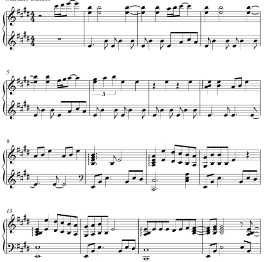

Partituras

Más de 100 partituras de distintos géneros del cancionero popular argentino e internacional, con arreglos originales para piano.
Músico, pianista y compositor
Creador de arreglos originales en piano sólo de múltiples estilos: folklore-rock nacional argentino-pop-tangos-música clásica. Produce además pequeños tutoriales completos de folklore Argentino para los que están empezando con el piano.

Más de 100 partituras de distintos géneros del cancionero popular argentino e internacional, con arreglos originales para piano.

Videos a velocidad lenta de fragmentos canciones de folclore argentino, para comenzar a interpretar las obras que te interesen.